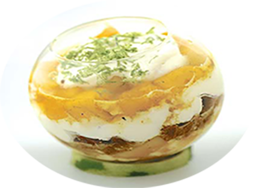

Verrine de brebis à la mangue

Pour 4 persones
Préparation : 15 mn
Repos :
Cuisson : 3 mn
Ingrédients
- 1 belle mangue bien mûre
- 1 pincée de safran en poudre
- 1 jus et zeste de citron vert
- 10 cl de crème fleurette
- 1 cuillère à café de miel
- 1 pincée de poudre de vanille
- 6 petits sablés à la cannelle
- 200 g de brousse de brebis
Recette
- Pelez la mangue, coupez la chair en petits cubes et faites-les revenir 3 minutes à feu vif avec le miel,
le safran, la vanille et le jus de citron.
- Ecrasez grossièrement les sablés.
- Fouettez la crème fleurette jusqu’à ce qu’elle double de volume.
- Ecrasez la brousse à la fourchette pour la détendre et mélangez-la délicatement avec la crème fouettée.
- Dans chacune des verrines, disposez dans l’ordre :
une fine couche de mangue, une de brousse à la crème, une de sablés, une de brousse, une de mangue
et enfin terminez par une couche de brousse parsemée de zestes de citron vert.
|